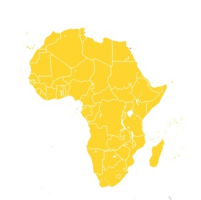
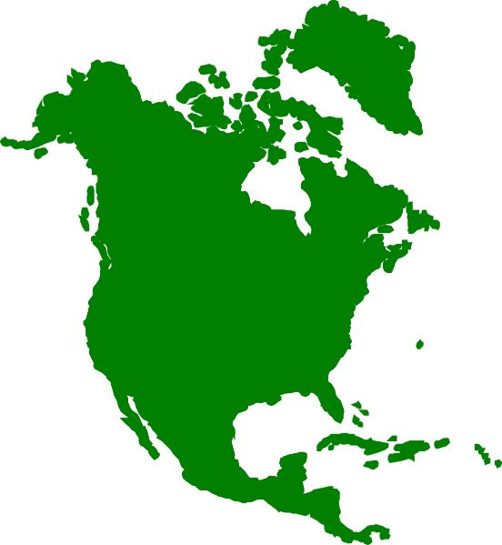
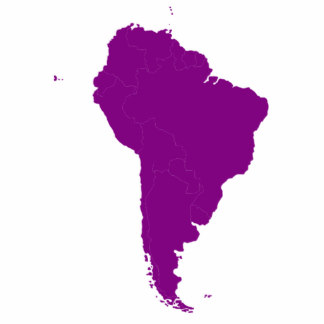
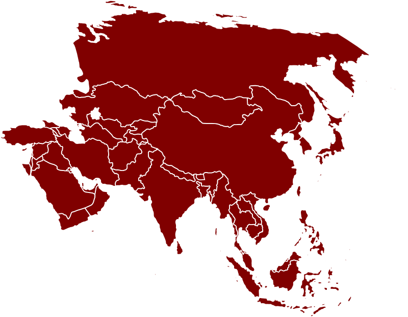
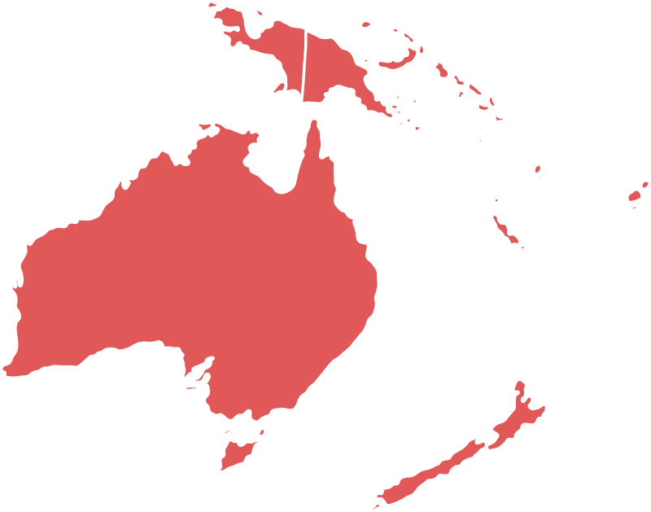
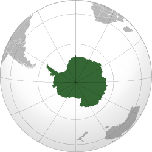

|  |  |  | |
 |  |  |
|---|
| Avstralija ni najmlajši kontinent je bila pa najkasneje odkrita. Šele v 18. stoletju je James Cook na svetu odkril še en do tedaj nepoznan kos zemlje. Najmanjša celina se je razvijala èisto loèeno od vseh ostalih in zato je danes tako zelo drugaèna, a hkrati tako zelo zanimiva in posebna. | bla bla | slika |
|---|---|
| slika | bla bla |